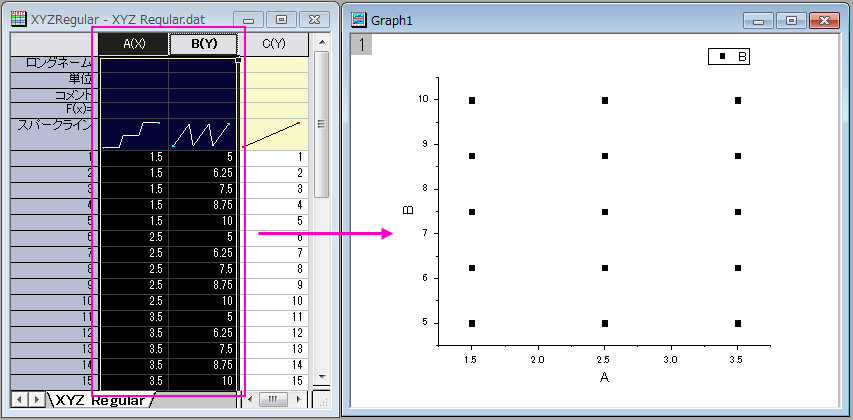

等間隔に並んだデータのグリッディング
GridMethod-RegularSpace
X/Y等間隔グリッディング法を使ってワークシートデータを行列に変換する場合、ワークシートデータは、次の条件を満たす必要があります。
- 各X値は、同じY値を持つ必要があり、各Y値は、同じX値を持つ必要があります。
- XおよびYデータの値は、等間隔に並んでいる必要があります。
XYデータの規則性をチェックする
規則性をチェックするには、X と Y データ列を散布図としてプロットし、X方向とY方向に等間隔に並んでいるかを調べます。次の例(下図参照)では、XおよびYデータはそれぞれX方向とY方向で等間隔になっています。XとYの間隔(増分)が異なっていても構いません。
- 
XYデータが等間隔に並んでいる場合に、ワークシートデータを行列に変換する
XYデータが等間隔に並んでいる場合
- ワークシートのZ列を選択して、ワークシート：行列に変換：XYZグリッディングすると、「ワークシートを行列に変換」ダイアログボックスが開きます。(Originは自動でデータをチェックし、結果に応じてX/Y等間隔、疎データ、Renka Cline を選択します)
- 『入力データ』を指定します。
- 必要なら 許容値の値を調整し、『重なりの置換』を指定します。(1セットのXYデータに対して複数のZ値を持つ持つことはできません。)
- グリッディング法を「X/Y等間隔」にセットします。
- 任意で、XとYの範囲を指定して、プレビューグラフタイプを選択します。
- OKをクリックすると、グリッディングされたZ値を持つ行列が作成されます。